Teori til knallert 30 og 45
Øv teorien til knallertkørekort: spørgsmål med forklaring, prøveeksamen og dine fejl samlet – på dansk og uden internet.
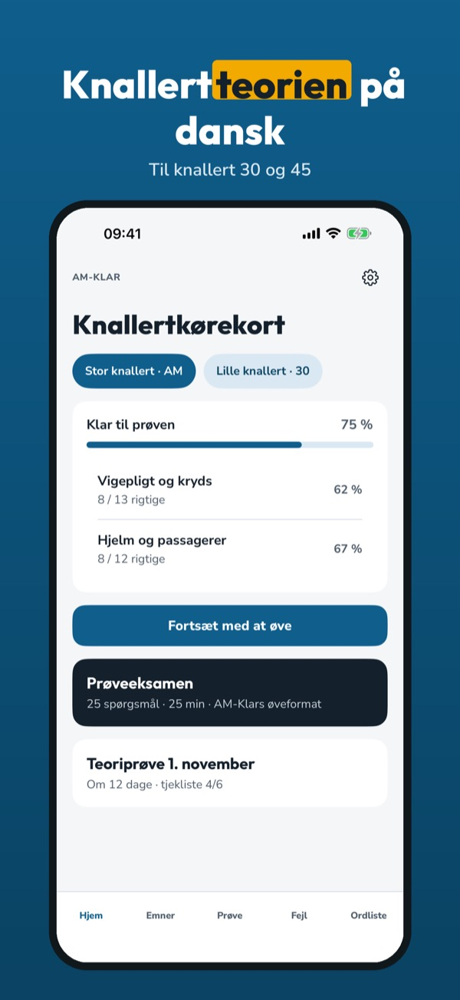
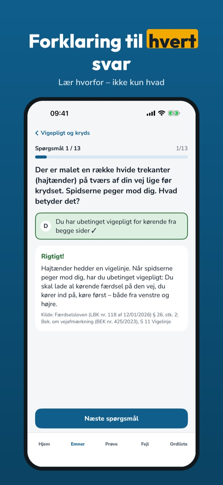
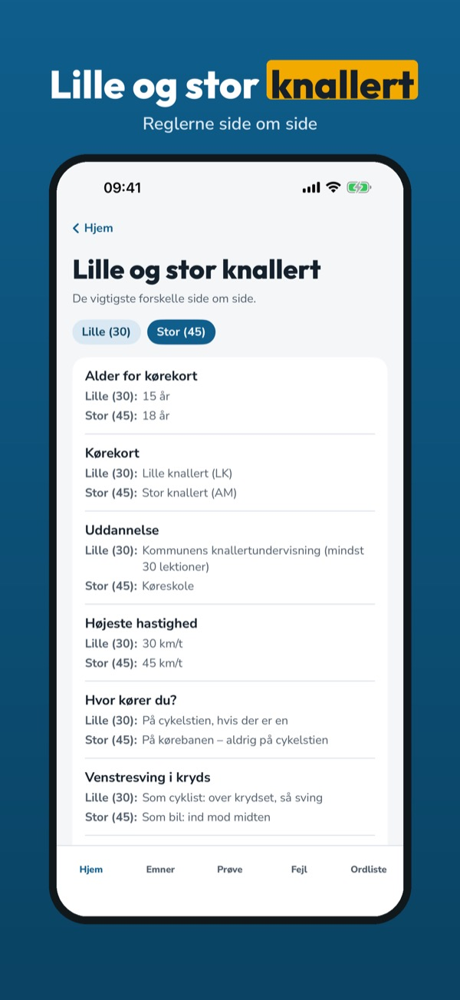
AM-Klar hjælper dig med at øve teorien til knallertkørekortet – med knallertregler, ikke bilregler.
• Spørgsmål pr. emne med forklaring til hvert svar
Du kan øve 20 spørgsmål, ordlisten og tjeklisten uden køb. Den fulde version er et engangskøb, der låser alle spørgsmål, prøveeksamener og statistik op. Intet abonnement.
AM-Klar er uafhængig og ikke tilknyttet Færdselsstyrelsen eller politiet. AM-Klar holder ikke prøver og udsteder ikke kørekort.
Terms of Use (EULA): https://www.apple.com/legal/internet-services/itunes/dev/stdeula/
Privacy: https://baytechbv.github.io/privacy/moped-am-eu/
Mopon teoriakoe suomeksi
Harjoittele mopokortin teoriaa: kysymykset selityksineen, koeharjoitus ja virheiden kertaus – suomeksi ja ilman nettiä.
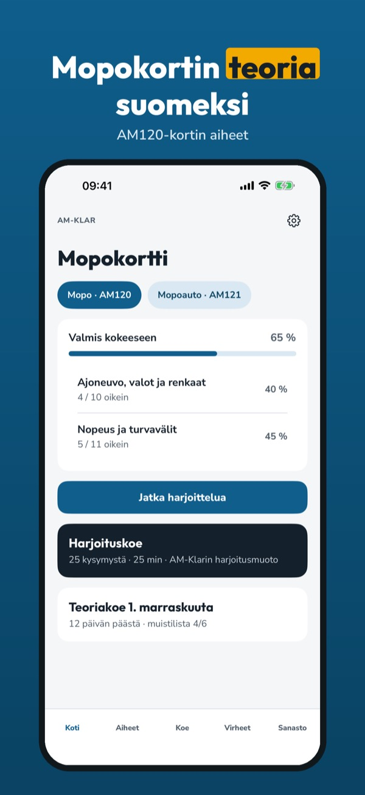
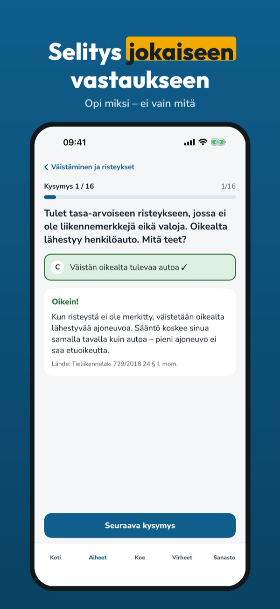
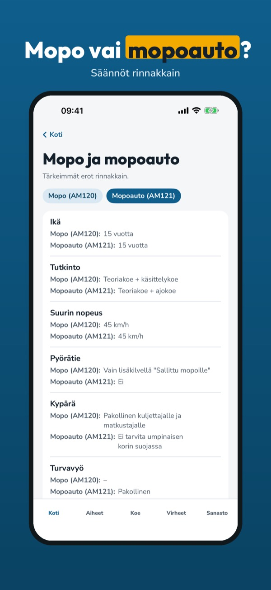
AM-Klar auttaa harjoittelemaan AM120-mopokortin teoriaa – mopon säännöillä, ei henkilöauton.
• Kysymykset aiheittain, selitys jokaiseen vastaukseen
Voit harjoitella 20 kysymystä, sanastoa ja tarkistuslistaa ilman ostoa. Täysi versio on kertaosto, joka avaa kaikki kysymykset, koeharjoitukset ja tilastot. Ei tilausta.
AM-Klar on itsenäinen eikä liity Traficomiin tai Ajovarmaan. AM-Klar ei järjestä kokeita eikä myönnä ajokortteja.
Terms of Use (EULA): https://www.apple.com/legal/internet-services/itunes/dev/stdeula/
Privacy: https://baytechbv.github.io/privacy/moped-am-eu/
Oefen voor je AM-rijbewijs
Oefen het bromfietstheorie-examen: vragen met uitleg, proefexamens en je fouten op één plek – in het Nederlands en zonder internet.
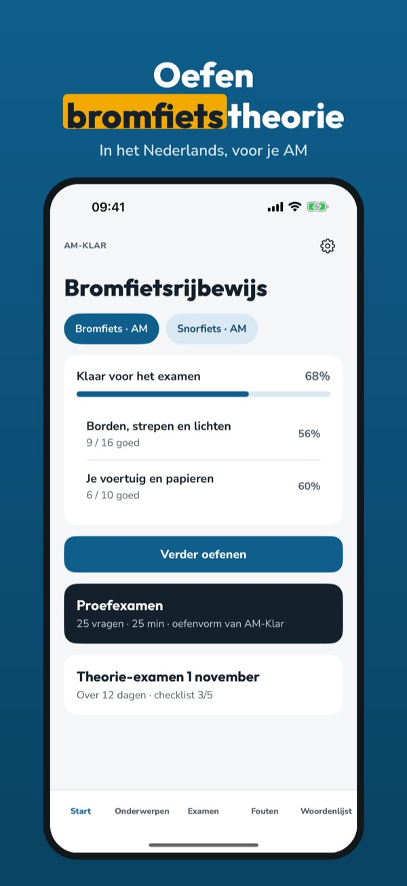
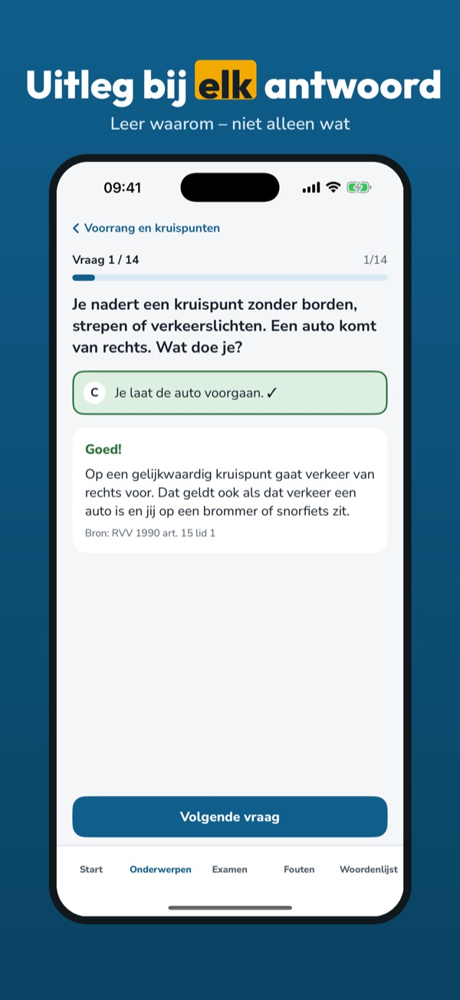
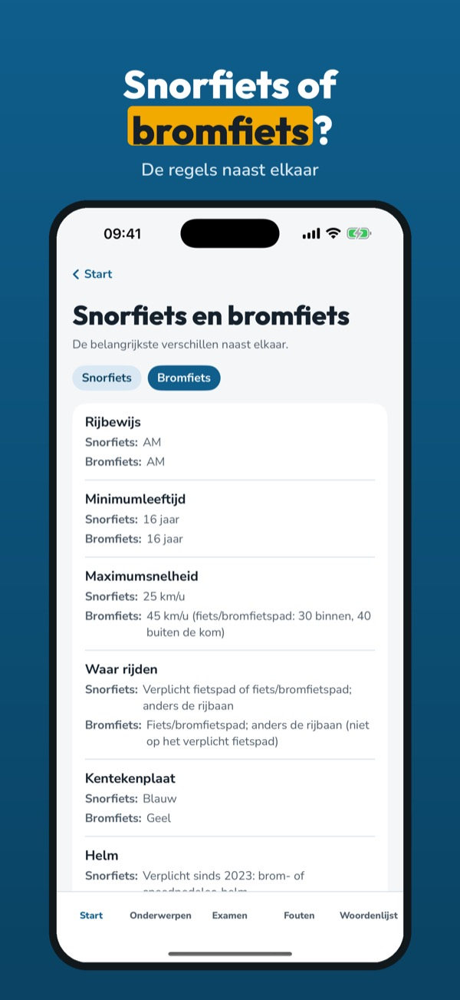
AM-Klar helpt je oefenen voor het theorie-examen voor bromfiets en scooter (AM) – met bromfietsregels, niet met autoregels.
• Vragen per onderwerp met uitleg bij elk antwoord
Je kunt 20 vragen, de begrippenlijst en de checklist zonder aankoop gebruiken. De volledige versie is een eenmalige aankoop die alle vragen, proefexamens en statistiek ontgrendelt. Geen abonnement.
AM-Klar is onafhankelijk en niet verbonden aan het CBR. Je examen doe je bij het CBR.
Terms of Use (EULA): https://www.apple.com/legal/internet-services/itunes/dev/stdeula/
Privacy: https://baytechbv.github.io/privacy/moped-am-eu/
Theorie für Moped und AM
Übe die Theorie für den Mopedausweis: Fragen mit Erklärung, Prüfungssimulation und deine Fehler an einem Ort – auf Deutsch und offline.
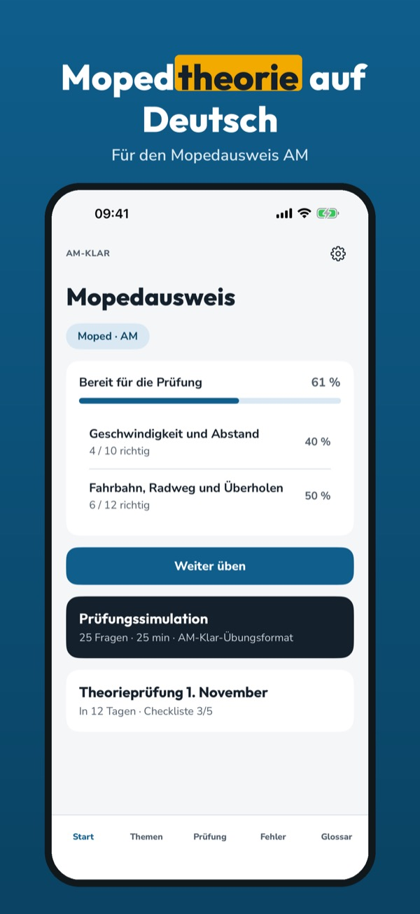
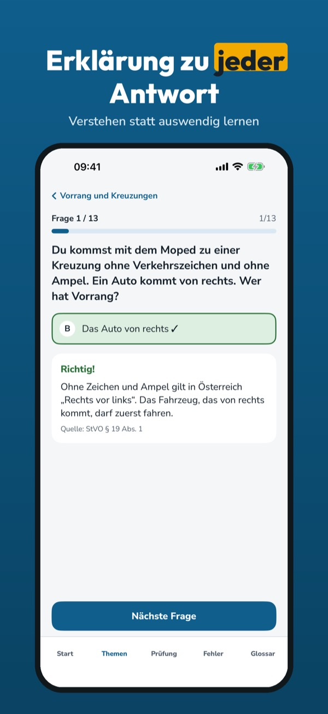
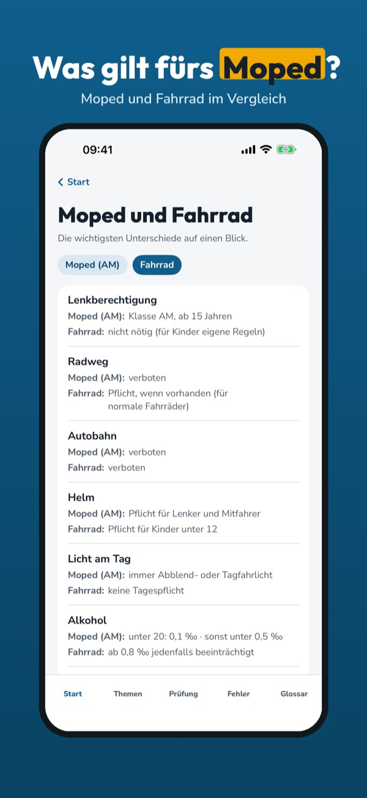
AM-Klar hilft dir, die Theorie für den Mopedausweis (Klasse AM) in Österreich zu üben – mit Mopedregeln, nicht mit Autoregeln.
• Fragen nach Thema mit Erklärung zu jeder Antwort
20 Fragen, die Begriffe und die Checkliste kannst du ohne Kauf nutzen. Die Vollversion ist ein Einmalkauf und schaltet alle Fragen, Simulationen und die Statistik frei. Kein Abo.
AM-Klar ist unabhängig und nicht mit Behörden oder Fahrschulen verbunden. AM-Klar nimmt keine Prüfungen ab und stellt keine Führerscheine aus.
Terms of Use (EULA): https://www.apple.com/legal/internet-services/itunes/dev/stdeula/
Privacy: https://baytechbv.github.io/privacy/moped-am-eu/
Teori för moped klass I
Öva teorin för mopedkörkort: frågor med förklaring, övningsprov och dina fel samlade – på svenska och utan internet.
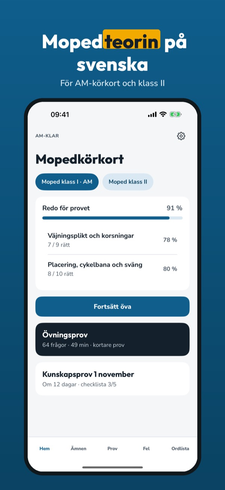
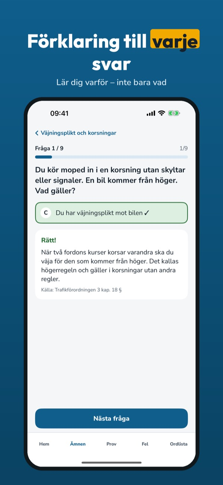
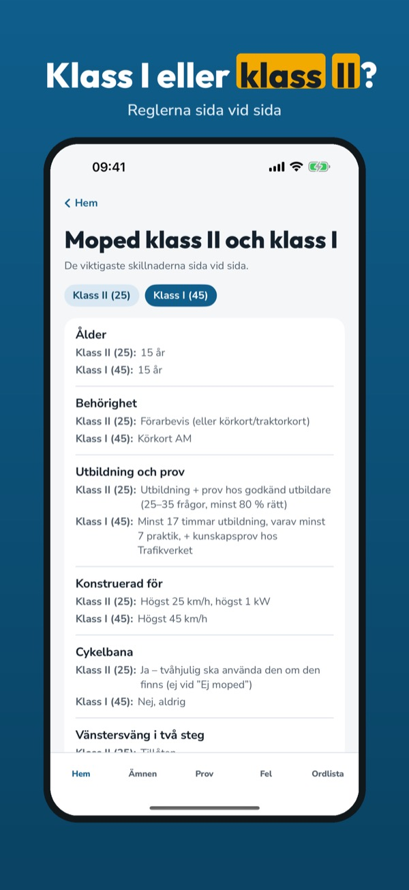
AM-Klar hjälper dig att öva teorin för AM-körkort (moped klass I) – med mopedregler, inte bilregler.
• Frågor per ämne med förklaring till varje svar
Du kan öva 20 frågor, ordlistan och checklistan utan köp. Fullversionen är ett engångsköp som låser upp alla frågor, övningsprov och statistik. Ingen prenumeration.
AM-Klar är fristående och inte kopplad till Trafikverket eller Transportstyrelsen. AM-Klar håller inga prov och utfärdar inga körkort.
Terms of Use (EULA): https://www.apple.com/legal/internet-services/itunes/dev/stdeula/
Privacy: https://baytechbv.github.io/privacy/moped-am-eu/
Teori for moped klasse AM
Øv teorien til mopedlappen: spørsmål med forklaring, prøvetester og feilene dine samlet – på norsk og uten nett.
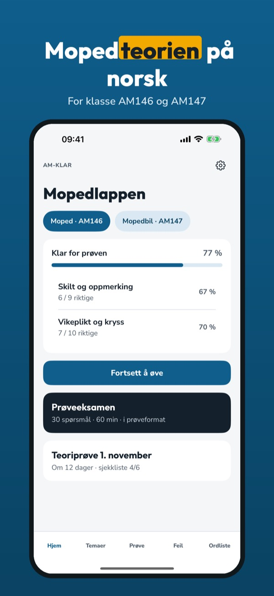
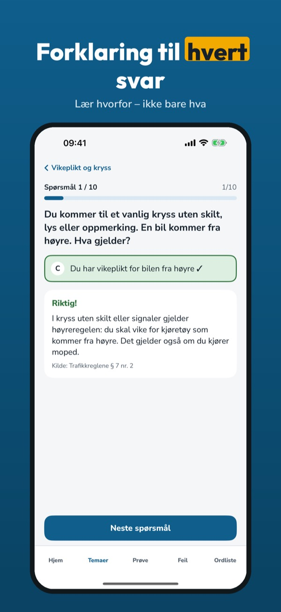
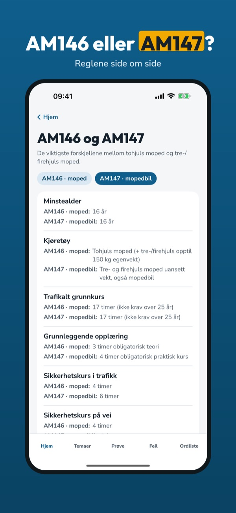
AM-Klar hjelper deg å øve teorien til mopedlappen (klasse AM146) – med mopedregler, ikke bilregler.
• Spørsmål per emne med forklaring til hvert svar
Du kan øve på 20 spørsmål, ordlisten og sjekklisten uten kjøp. Fullversjonen er et engangskjøp som låser opp alle spørsmål, prøvetester og statistikk. Ingen abonnement.
AM-Klar er uavhengig og ikke tilknyttet Statens vegvesen. Prøven tar du hos Statens vegvesen.
Terms of Use (EULA): https://www.apple.com/legal/internet-services/itunes/dev/stdeula/
Privacy: https://baytechbv.github.io/privacy/moped-am-eu/